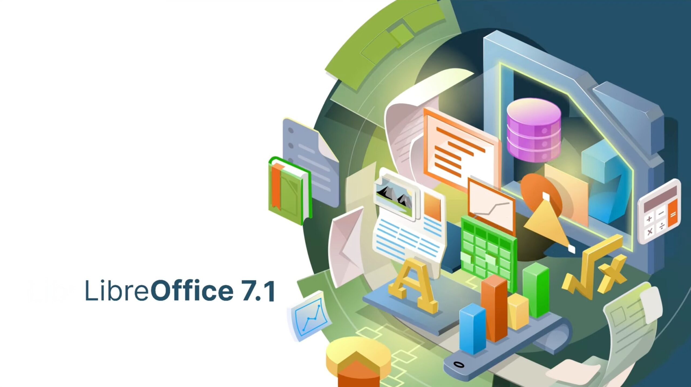
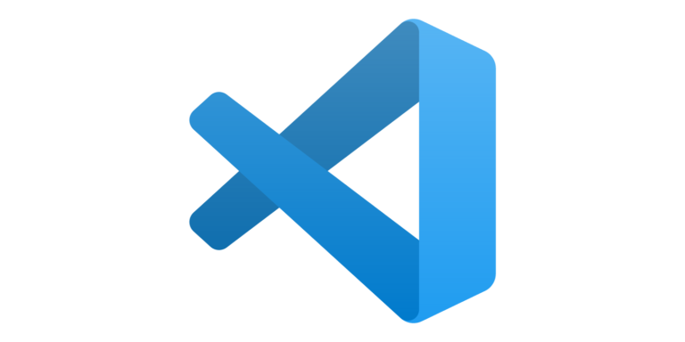
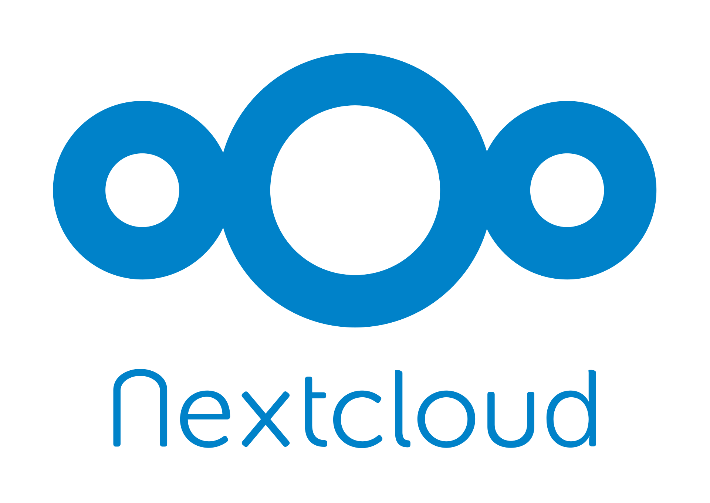

Aplicaciones de software libre
1. Linux Kernel 5.x: Sitio Web: Linux Kernel Descripción: El corazón del sistema operativo Linux, el kernel, ha experimentado mejoras significativas en la versión 5.x. Con soporte para hardware más reciente, mejoras en el rendimiento y nuevas características, el kernel Linux continúa siendo un pilar fundamental para sistemas operativos basados en Linux.
2. LibreOffice 7.x: Sitio Web: LibreOffice Descripción: La suite de oficina LibreOffice ofrece un conjunto completo de aplicaciones, desde procesadores de texto hasta hojas de cálculo y herramientas de presentación. La versión 7.x ha mejorado la compatibilidad con formatos de archivo y ha introducido características avanzadas, consolidándose como una alternativa de código abierto a las suites de oficina comerciales.

3. GIMP 3.x: Sitio Web: GIMP Descripción: GIMP (GNU Image Manipulation Program) es una poderosa herramienta de manipulación de imágenes. La versión 3.x presenta una interfaz renovada y mejoras en el rendimiento, brindando a los diseñadores gráficos y fotógrafos una alternativa sólida y de alto rendimiento a los programas de edición de imágenes propietarios.

4. VS Code - Visual Studio Code: Sitio Web: VS Code Descripción: Desarrollado por Microsoft pero de código abierto, Visual Studio Code es un entorno de desarrollo integrado (IDE) altamente personalizable y eficiente. Con soporte para una amplia variedad de lenguajes de programación y extensiones, se ha convertido en la elección preferida de muchos desarrolladores.

5. Nextcloud 23: Sitio Web: Nextcloud Descripción: Nextcloud es una plataforma de almacenamiento y colaboración en la nube de código abierto. La versión 23 ofrece mejoras en la seguridad, funciones de colaboración avanzadas y una experiencia de usuario mejorada, consolidando su posición como una alternativa confiable a servicios de nube propietarios.

6. Blender 3.x: Sitio Web: Blender Descripción: Blender es una potente suite de creación 3D utilizada en animación, modelado, renderizado y más. La versión 3.x continúa expandiendo sus capacidades, con mejoras en el rendimiento y nuevas características para artistas 3D y creadores de contenido.
7. MariaDB 10.x: Sitio Web: MariaDB Descripción: MariaDB, un sistema de gestión de bases de datos relacionales, ha evolucionado para ofrecer rendimiento y confiabilidad. La versión 10.x trae consigo mejoras en la escalabilidad, seguridad y compatibilidad con estándares SQL.

8. Docker 20.x: Sitio Web: Docker Descripción: Docker facilita la creación, implementación y ejecución de aplicaciones en contenedores. La versión 20.x ha mejorado la integración con orquestadores de contenedores y proporciona herramientas más avanzadas para la gestión de contenedores en entornos de producción.

9. Audacity 3.x: Sitio Web: Audacity Descripción: Audacity es una aplicación de software libre para grabación y edición de audio. La versión 3.x ha introducido mejoras en la interfaz de usuario y nuevas características para satisfacer las necesidades de los editores de audio aficionados y profesionales.

10. Git 2.x: Sitio Web: Git Descripción: Git, el sistema de control de versiones distribuido, sigue siendo esencial para el desarrollo de software colaborativo. Las versiones recientes han mejorado la eficiencia y la usabilidad, facilitando el seguimiento y la gestión del código fuente.

Volver al inicio